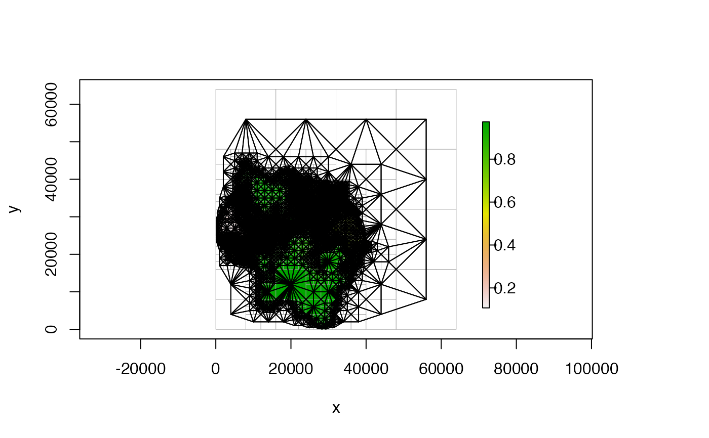

Plots a Quadtree.
# S4 method for Quadtree,missing plot( x, add = FALSE, col = NULL, alpha = 1, nb_line_col = NULL, border_col = "black", border_lwd = 1, xlim = NULL, ylim = NULL, zlim = NULL, crop = FALSE, na_col = "white", adj_mar_auto = 6, legend = TRUE, legend_args = list(), ... )
Arguments
| x | a |
|---|---|
| add | boolean; if |
| col | character vector; the colors that will be used to create the
color ramp used in the plot. If no argument is provided,
|
| alpha | numeric; transparency of the cell colors. Must be in the range 0-1, where 0 is fully transparent and 1 (the default) is fully opaque. |
| nb_line_col | character; the color of the lines drawn between
neighboring cells. If |
| border_col | character; the color to use for the cell borders. Use "transparent" if you don't want borders to be shown. Default is "black". |
| border_lwd | numeric; the line width of the cell borders. Default is 1. |
| xlim | two-element numeric vector; defines the minimum and
maximum values of the x axis. Note that this overrides the |
| ylim | two-element numeric vector; defines the minimum and
maximum values of the y axis. Note that this overrides the |
| zlim | two-element numeric vector; defines how the colors are
assigned to the cell values. The first color in |
| crop | boolean; if |
| na_col | character; the color to use for |
| adj_mar_auto | numeric; if not |
| legend | boolean; if |
| legend_args | named list; contains arguments that are sent to the
|
| ... | arguments passed to the default
|
Value
no return value
Details
See 'Examples' for demonstrations of how the various options can be used.
Examples
library(quadtree) data(habitat) # create quadtree qt <- quadtree(habitat, split_threshold = .1, adj_type = "expand") ##################################### # DEFAULT ##################################### # default - no additional parameters provided plot(qt)##################################### # CHANGE PLOT EXTENT ##################################### # note that additional parameters like 'main', 'xlab', 'ylab', etc. will be # passed to the default 'plot()' function # crop extent to the original extent of the raster plot(qt, crop = TRUE, main = "cropped")# crop and don't plot NA cells plot(qt, crop = TRUE, na_col = NULL, main = "cropped")# use 'xlim' and 'ylim' to zoom in on an area plot(qt, xlim = c(10000, 20000), ylim = c(20000, 30000), main = "zoomed in")##################################### # COLORS AND BORDERS ##################################### # change border color and width plot(qt, border_col = "transparent") # no bordersplot(qt, border_col = "gray60") # gray bordersplot(qt, border_lwd = .3) # change line thickness of borders# change color transparency plot(qt, alpha = .5)# change color of NA cells plot(qt, na_col = "lavender")# don't plot NA cells at all plot(qt, na_col = NULL)##################################### # SHOW NEIGHBOR CONNECTIONS ##################################### # plot all neighbor connections plot(qt, nb_line_col = "black", border_col = "gray60")# don't plot connections to NA cells plot(qt, nb_line_col = "black", border_col = "gray60", na_col = NULL)##################################### # LEGEND ##################################### # no legend plot(qt, legend = FALSE)# increase right margin size plot(qt, adj_mar_auto = 10)# use 'legend_args' to customize the legend plot(qt, adj_mar_auto = 10, legend_args = list(lgd_ht_pct = .8, bar_wd_pct = .4))